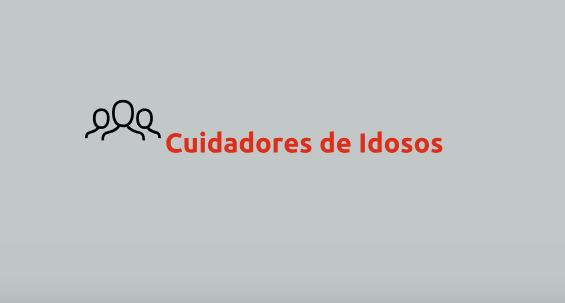

Projeto Aprendendo a tomar decisões com o Xadrez/Apcef Cidadã – Coordenação SP
Curso de Cuidadores de Idosos apoiado pela Coordenação GO celebra solenidade de formatura
Compreender as transformações ocorridas durante a terceira idade e conhecer técnicas para os cuidados requeridos nesta fase da vida foram alguns dos ensinamentos do “Curso de Cuidadores de Idosos”, que celebrou, dia 10 de outubro de 2018, a formatura de mais uma turma, a qual capacitou um total de doze pessoas.
Realizado pela Escola Vicentina de Cuidadores, que funciona nas dependências do Abrigo dos Idosos São Vicente de Paulo, em Goiânia/GO, o curso tem o apoio da Moradia e Cidadania/GO
O curso de 180 horas, distribuídas entre aulas teóricas e práticas, teve como principal objetivo oferecer conhecimentos voltados à formação de dois tipos diferentes de cuidadores: o familiar e o formal, que exercerá a atividade profissionalmente, de forma remunerada.
O evento contou com a presença dos patrocinadores do projeto, professores, voluntários, alunos e seus familiares, os quais aplaudiram com uma salva de palmas os novos cuidadores durante o ato de entrega dos certificados.
Projeto é resultado da parceria celebrada entre a Moradia e Cidadania – Coordenação Goiás, SEMAS – Secretária Municipal de Assistência Social, Conselho Metropolitano de Goiânia, Conselho Estadual do Idoso e Conselho Municipal do Idoso.
A Moradia e Cidadania – Coordenação PI articulou e acompanhou, durante a manhã do dia 13 de outubro de 2018, o Grupo Fraternidade Feminina Amor ao Próximo – Loja maçônica Jacob Gayoso em uma visita ao Abrigo de Idosos São Lucas.
Durante a ação, o Grupo, representado pela Sra. Claudilane, realizou, em uma iniciativa solidária, a doação de diversos alimentos, materiais de limpeza e de higiene pessoal; itens de extrema necessidade para a manutenção do abrigo.
A Coordenação PI agradece, em nome de cada um dos idosos beneficiados, não apenas a doação, mas, de modo particular, o carinho e o cuidado emanados na ocasião da visita.
A vice-coordenadora da Moradia e Cidadania/PI, Solange Cordeiro, juntamente à assistente social, Gersânia Mendes, visitaram, durante os dias 24 e 25 de setembro de 2018, dois projetos apoiados pela Coordenação PI, os quais serão campo de estágio supervisionado para duas alunas do curso de graduação em Serviço Social da FAPI, através de termo de cooperação técnica firmado com a ONG.
Na tarde do dia 24, a visita se deu no Projeto “Educando para o Futuro”, no Instituto das Irmãs Ursulinas de São Jerônimo de Somasca, localizado no Bairro Real Copagre, na Zona Norte de Teresina/PI, que receberá a aluna Elinez Pereira.
Já durante a tarde do dia 25, a visita foi ao Centro de Apoio à Criança e ao Adolescente – CACA, localizado no Bairro Satélite, na Zona Leste de Teresina/PI, que receberá a estudante Yully Macêdo.
A proposta principal do estágio nestes projetos apoiados pela ONG é, além de contribuir com a formação profissional das alunas, intensificar ações, serviços e informações para o empoderamento e exercício da cidadania das famílias atendidas e promover, consequentemente, melhorias em sua qualidade de vida.
As estagiárias estarão sob a supervisão da ONG Moradia e Cidadania, através da assistente social e supervisora de campo, Gersânia Mendes, e da Faculdade do Piauí (FAPI), através da assistente social e supervisora acadêmica, Maria Madalena Caminha.